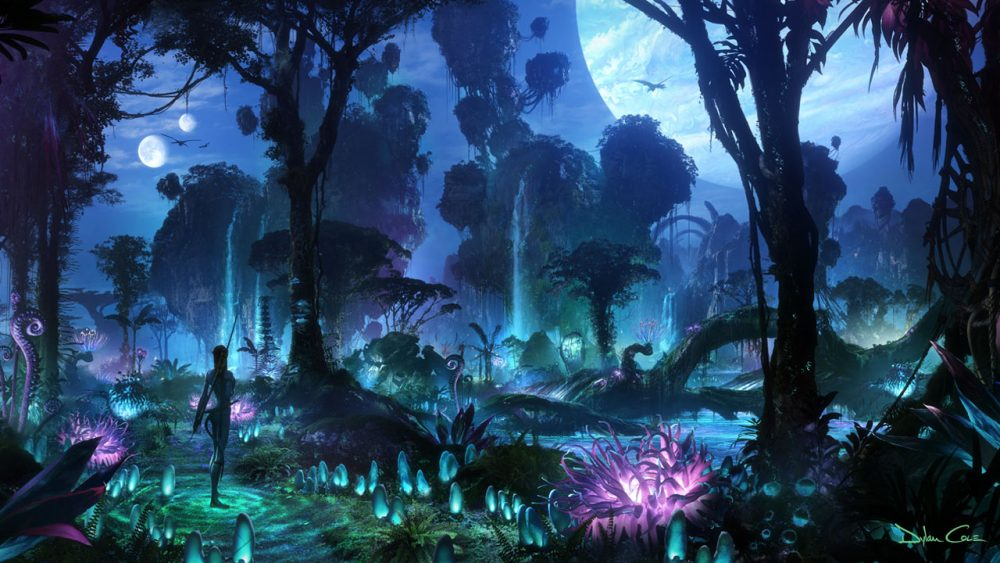

Howl’s Moving Castle is honestly one of the most magical films I’ve ever seen. It's a Studio Ghibli movie, which already guarantees it's going to be beautiful, but there’s something extra special about this one. The story follows Sophie, who’s cursed by a witch and transformed into an old woman. To break the curse, she ends up in Howl's magical, moving castle (which, by the way, looks like something straight out of a dream). What I love most is the mix of magic, whimsy, and heart—it’s a story about finding yourself, no matter what age you are. Plus, Howl’s the coolest wizard ever, and the animation is stunning. Every time I watch it, I get lost in its world.

I still remember seeing Avatar for the first time when I was 8 years old, and I was completely blown away. Even now, I think it’s one of the most visually stunning movies ever made. Watching it in 3D was like nothing I had ever experienced before—definitely an unforgettable movie.
Tangled is such a fun, feel-good movie, and it brings back so many great memories for me. It’s a Disney take on the Rapunzel fairy tale, but with way more humor and charm. Rapunzel is this spunky, adventurous princess with magic hair, and Flynn Rider is the sarcastic, lovable thief who gets roped into her journey. The animation is gorgeous (seriously, that floating lantern scene gets me every time). For me, this movie just feels like pure joy—it’s funny, it’s heartwarming, and it’s one of those movies I can watch over and over again when I need a little pick-me-up.